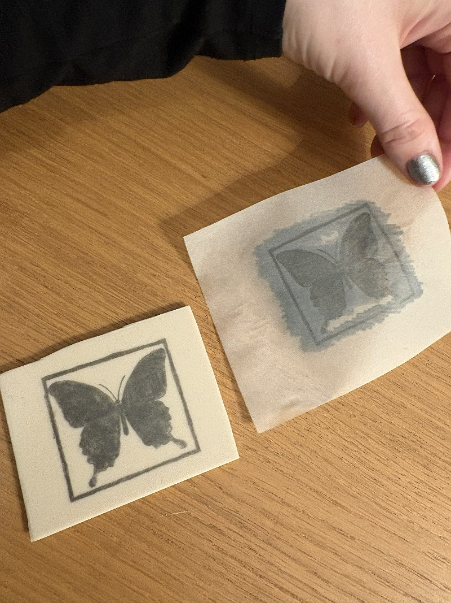
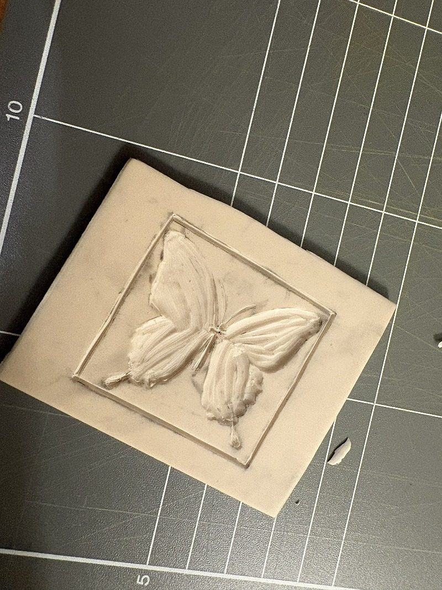

This was experimentation that I did, ostensibly in development of our outcome for the Post it to Prague brief in the AM session, but it was a technique that I was excited to try for its possibilities for my PM work. Linocutting is a form of printing where you basically carve a piece of linoleum (or in this case I used softer rubber) and use this as a stamp. I traced an transferred an image of a butterfly onto a piece of rubber, then cut this out, painted it with arcylic and stamped it onto fabric. I used acrylic because I was out of ink and this definitely affected the quality of my prints. This process also reminded me of some work that I did in Inforgraphics, earlier in 2026, where I created a series of pictograms using potato prints. It was way easier to get a more precise carving in the rubber, but I still was not sure that I liked the stamp effect. Something to keep in mind as an option, though!

